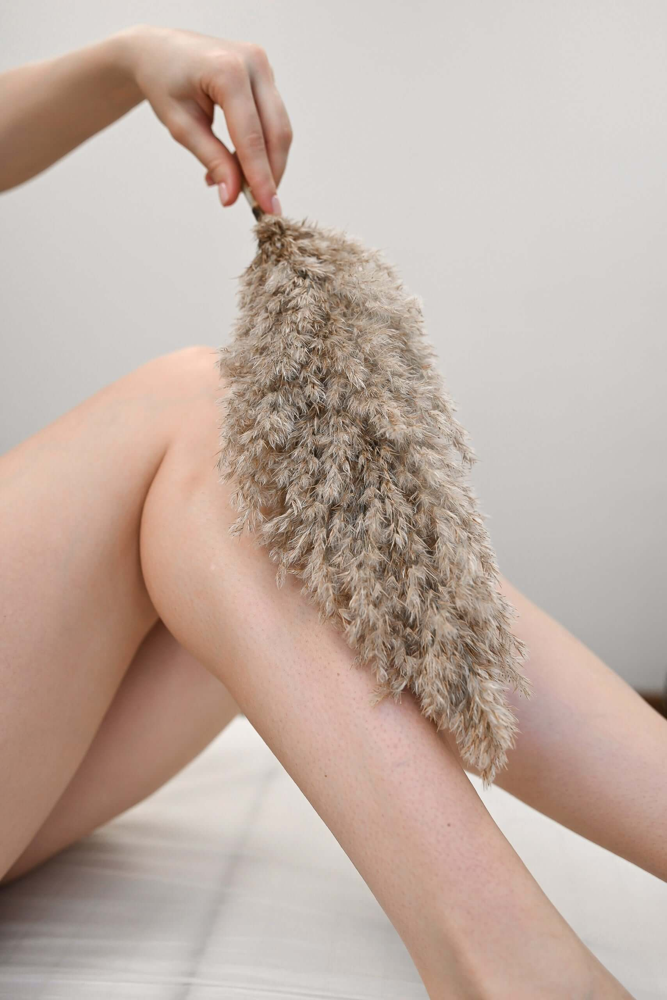

Эпиляция и депиляция: в чем разница?

В современном мире удаление нежелательных волос на лице и теле стало неотъемлемой процедурой в жизни большинства девушек. Но при этом многие не до конца понимают разницу в понятиях «эпиляция» и «депиляция». Это не удивительно, ведь термины схожи сами по себе, кроме того, имеют близкое значение. Так давайте разберемся, какая разница между эпиляцией и депиляцией.
Депиляция – неполное удаление волос. При данной процедуре удаляется часть волоса, которая находится над поверхностью кожи. То есть фолликулы остаются нетронутыми, что делает депиляцию лишь кратковременной мерой избавления от волос.
Эпиляция – удаление волос полностью, то есть вместе с корнем. Важным фактором здесь является удаление фолликулярного аппарата. Другими словами, процедура эпиляции – это кардинальная мера, направленная на полную остановку роста волос в нужном месте.
Вот мы и нашли ответ на вопрос «Эпиляция и депиляция: в чем разница?».
В студии лазерной эпиляции Мой секрет процедуры депиляции не проводятся, но мы вполне можем обозначить, какие методы эпиляции и депиляции существуют на сегодняшний день.
Под понятие депиляции подходит любое механическое удаление волос. Основными методами депиляции считаются:
- бритье;
- удаление волос с помощью крема и геля;
- воск;
- шугаринг;
- применение эпилятора.
Бритье, вероятно, самый известный и распространенный метод удаления волос. К сожалению, он же и является самым малоэффективным способом. При бритье лезвия просто срезают волосы по уровню кожи, поэтому спустя 2-3 дня уже заметна появившаяся «щетина».
Гель и/или крем для удаления волос — это более эффективный метод, а по совместительству, еще и самый быстрый и безболезненный. Особенность депиляторных гелей в том, что это химическая депиляция, в процессе которой оказывается влияние на волосы. При частом использовании подобного крема волосков должно стать меньше.
Возвращаясь к вопросу о разнице между эпиляцией и депиляцией, нужно подчеркнуть, что депиляторные кремы отчасти можно отнести именно к эпиляции, так как уменьшается общее количество волос в зоне применения.
Воск – эффективный, но болезненный метод депиляции. После нанесения восковых полосок, воск застывает, после чего отдирается быстрым движением, вырывая волосы вместе с корнем. После такой процедуры растительность не будет появляться около двух недель.

Шугаринг очень похож на восковый способ депиляции. Есть только 2 отличия: материал для депиляции (в шугаринге используется паста на основе сахара) и способ нанесения/ снятия. Паста наносится против роста волос, а удаляется по росту. В остальном по большому счету, включая стоимость, существенных отличий нет.
Электрический депилятор. Его часто называют эпилятором, но, вспоминая, какая разница между эпиляцией и депиляцией, мы делаем обратный вывод. Принцип работы заключается в вырывании волосков с помощью маленьких пинцетов. Достаточно эффективный способ и опять же болезненный.
Эпиляция направлена на полное удаление волос, поэтому методы эпиляции более технологичные и эффективные:
- лазерная эпиляция;
- фотоэпиляция;
- электроэпиляция.
Метод лазерной эпиляции почти не приносит боли, подходит практически для каждой части тела. С помощью яркой вспышки идет воздействие на пигмент меланин, свет преобразуется в тепло и разрушает фолликул.
Например, в студии лазерной эпиляции Мой секрет проводятся процедуры эпиляции диодным лазером на современном оборудовании, чтобы обеспечить клиентам максимальные комфорт и эффективность.
Фотоэпиляция – схожий метод. При поглощении света выделяется тепловая энергия, которая разрушает волосяной стержень и луковицу волоса. Но здесь нет той точечной направленности, которая присуща лазерной эпиляции.
Электроэпиляция. Очень тонкая игла проникает под кожу, доставляя электрический ток к фолликулам, вследствие чего последние разрушаются. Болезненная процедура, после которой требуется время на восстановление кожи. Возможны рубцы. Пожалуй, самый эффективный метод эпиляции.
Надеемся, наша статья помогла вам окончательно разобраться в вопросе «Эпиляция и депиляция: в чем разница?»